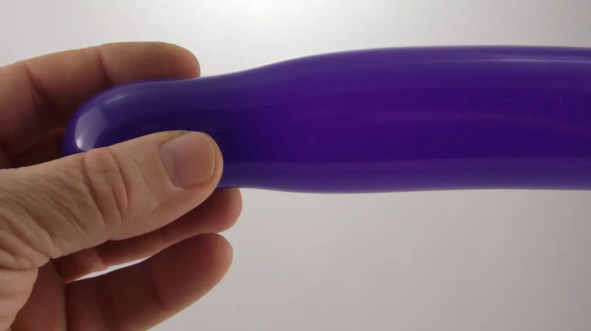
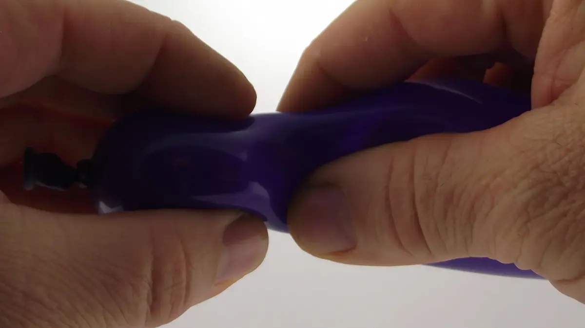
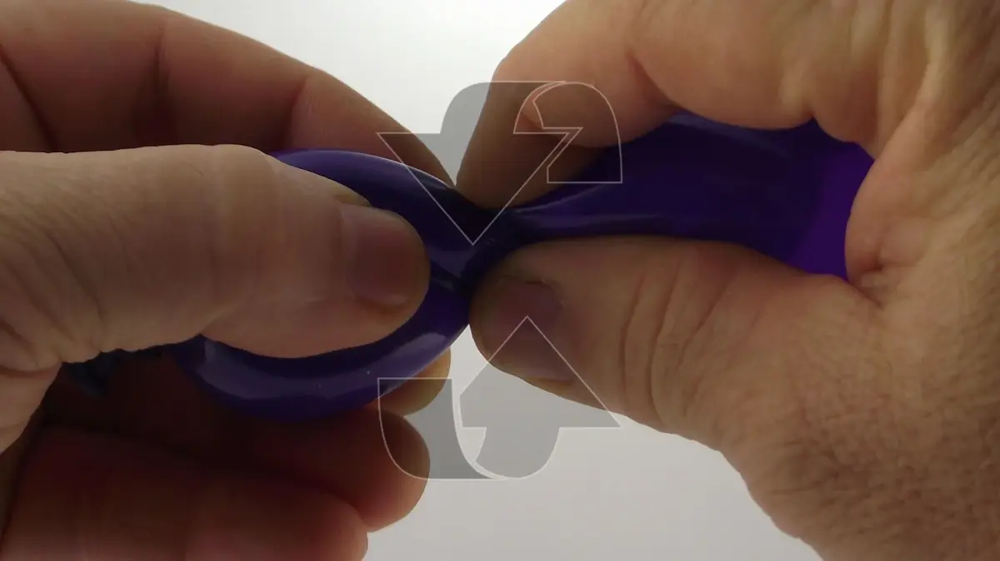
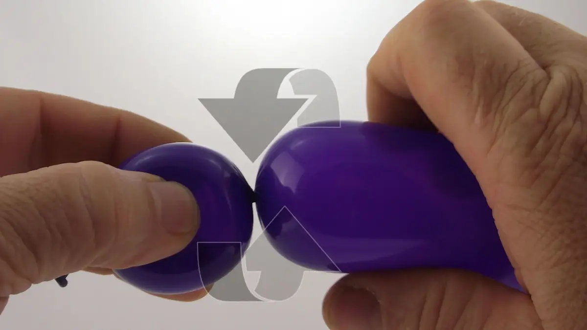
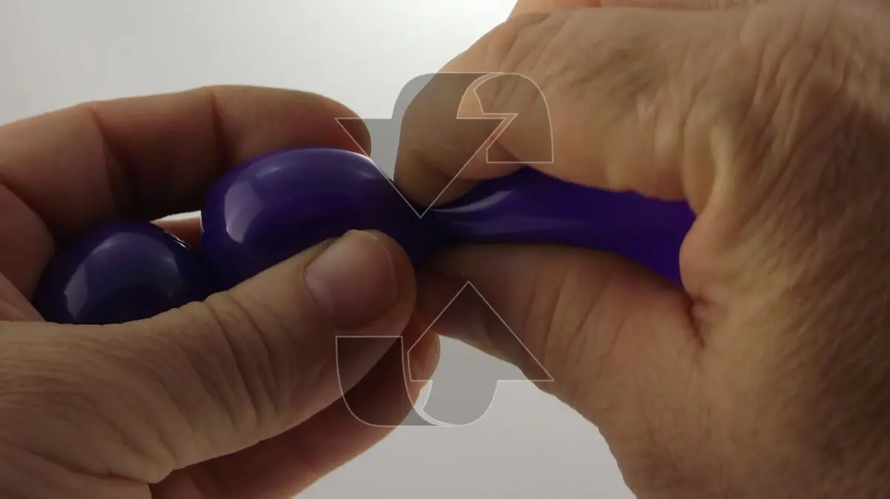
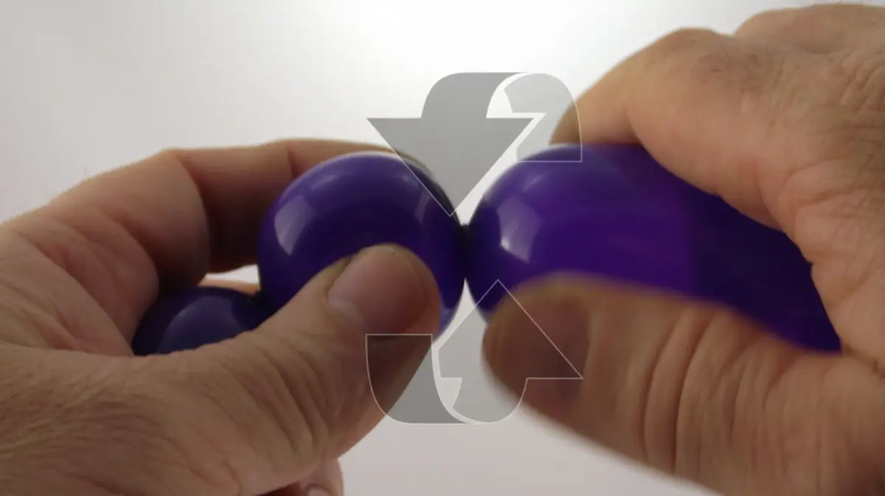
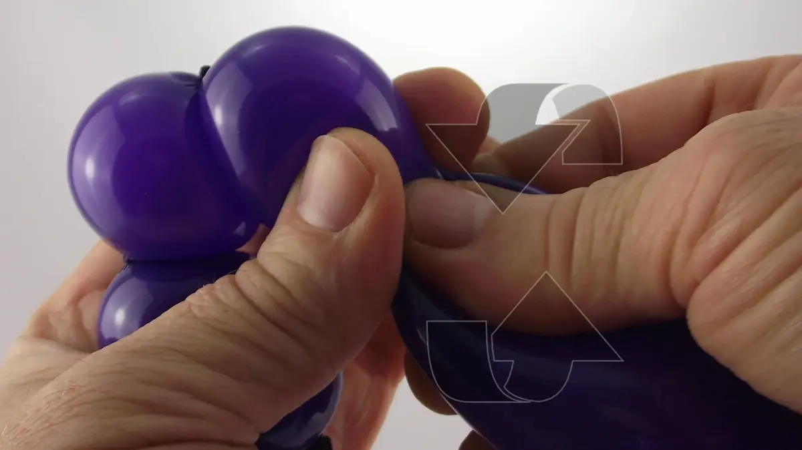
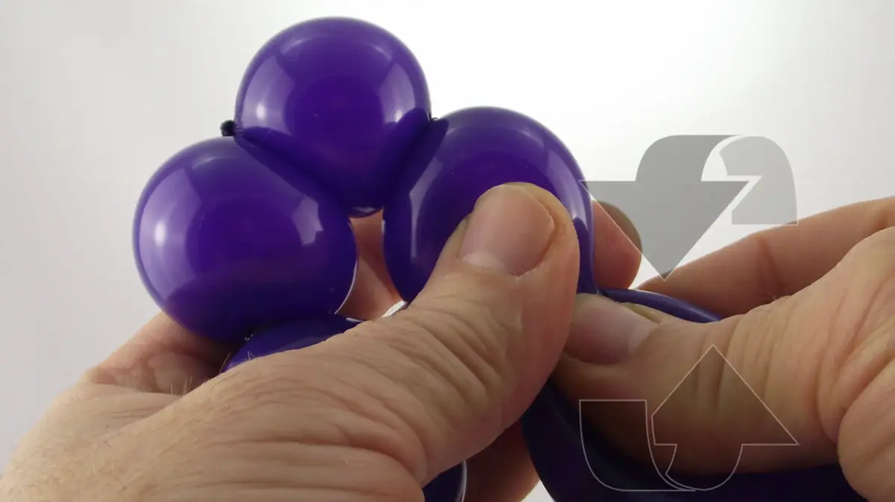
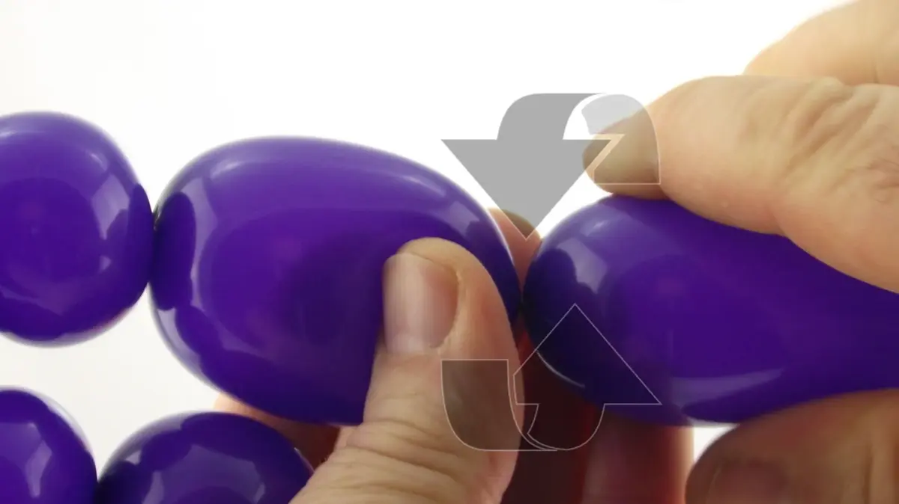
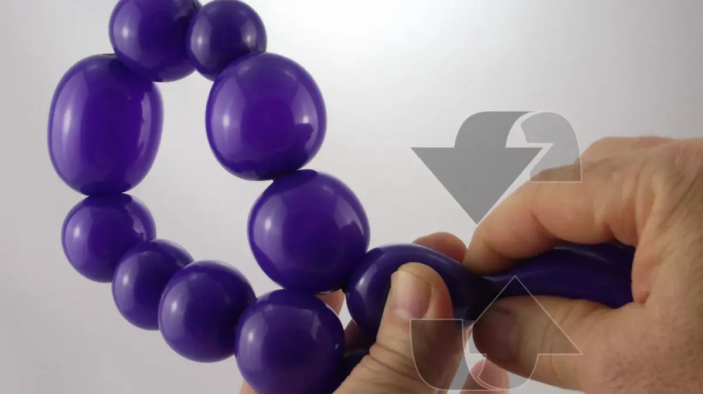

La confección de burbujas es la técnica de base de la torsión de globos. Una burbuja puede ser perfectamente redonda o bien ser alargada para formar una especie de 'salchicha'.
Desde el principio, tendríais que eligir :
- Vuestra mano de mantenimiento, es la que siempre mantendrá el globo.
- Vuestra mano de manipulación, es la que siempre dará formas al globo.
- Vuestro sentido de rotación del globo, es el sentido en lo cual siempre girarais el segmento de globo quedando en si-mismo.
Haced varios intentos para ver lo que es mejor para vosotros, pero una vez decidido, ¡nunca mas cambiar! La perfección de os futuros automatismos dependen de ello.
¡Eso no es todo! De momento que mantengáis la primera burbuja de una serie con su mano de mantenimiento, que coged el segmento de globo quedando con su mano de manipulación, y que habéis girado bien todas las burbujas de la serie siempre en el mismo sentido de rotación...¡las burbujas del medio no se desaceran nunca, incluso sin mantenerlas! ¡Vais a ver, es mágico!
1- Coger un globo en una mano (la mano de mantenimiento) y posicionar los dedos al sitio donde la burbuja debe estar formada.2- Posicionar la otra mano (la mano de manipulación) justo en frente de la primera, y presionar contra el globo con la ayuda del pulgar y el indice... 3- mientras girando el globo en si-mismo, de manera a formar un doblez.4- Una vez el doblez formado, seguir girando el segmento de globo que queda por lo menos tres veces en si-mismo a fin de bien asegurar la primera burbuja. 5- Sin soltar el globo, mover los dedos al sitio donde la segunda burbuja debe estar formada y hacer de nuevo la misma manipulación--¡siempre en el mismo sentido de rotación!6- Sin olvidar de girar bien el segmento de globo que queda por lo menos 3 veces en si-mismo para bien asegurar la segunda burbuja.7- Seguir igual con la tercera burbuja. Inútil de preocuparse por la burbuja del medio, se mantendrá sola, si utilizáis siempre el mismo sentido de rotación.8- Seguir igual con la cuarta burbuja. Todavía inútil de preocuparse por las burbujas del medio, se mantendrán todas solas, si utilizáis siempre el mismo sentido de rotación.9- Etc, etc !10- Podríais variar el tamaño de las burbujas según su necesidad y hacer tanto como queráis.¡Es tan simple como eso! ¡Hasta pronto! Para otra lección… ¡con Môssieur Ballon!